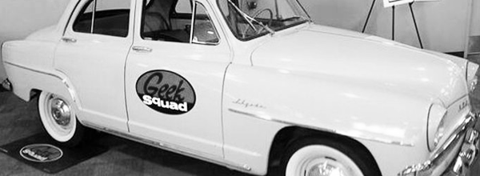
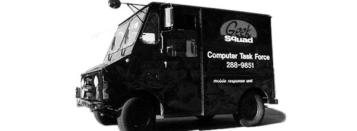
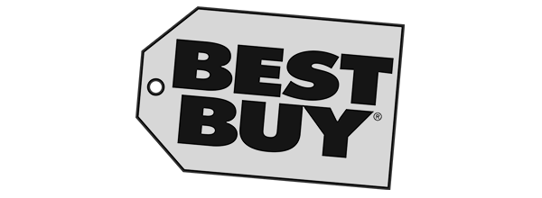
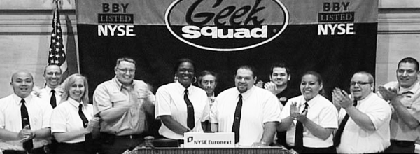
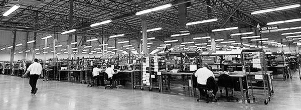
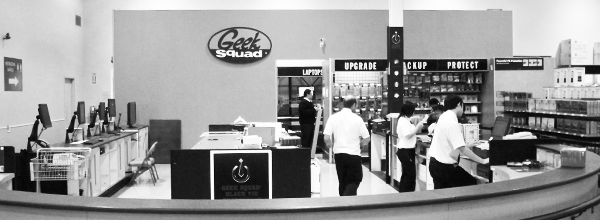

The Geek Squad is incorporated with $200, a mountain bike, and a cell phone. Robert did not want to be the CEO of a one man company, so he chooses the title of Chief Inspector.
As the company grew quickly, eventually it became time to retire the bike. The first vehicle is acquired, the 1958 Simca Aronde 1300 Elysée. This was Robert’s first form of advertising: nothing but the car and the logo.

The first official Agent is hired, and World Domination begins.
The Geek Squad also acquires its second rapid response urban assault vehicle; a black 1973 AM General SWAT truck (formerly an ice cream truck).
The Agent badges are introduced to facilitate ease of entry to computer crisis crime scenes. Robert’s badge number is 66.
The official Agent uniform is introduced (lovingly referred to as the “Black and Whites”).
Geek Squad started becoming old car repair instead of computer repair. Slowly over the next 4 years, the classic Geekmobiles were retired. Stepping into their place as official Geekmobiles? The VW Beetle. (Note: Not the geek car or the bug. It’s ALWAYS referred to as the Geekmobile.)
Geek Squad and Best Buy start dating. Geek Squad infiltrates Best Buy store number 4 in Minnetonka, MN.

Geek Squad acquires Best Buy (that’s our story and we’re sticking to it).

Geek Squad acquires Best Buy Canada on July 25, infiltrating its first store in Mississauga, Ontario.
Geek Squad Founder Robert Stephens and Geek Squad Agents ring the NYSE opening bell.

We now have our own city. Geek Squad City (a massive computer hardware repair centre) is opened in Louisville, Kentucky. At 165,000 square feet, Geek Squad City employs over 800 Agents, and fixes over 3,500 computers per day.
World Domination continues… Geek Squad opens up in the UK and China.
Home Theatre Install and Mobile Audio Install join the Geek Squad family in the United States.
Project Adrenaline is rolled out in Canada standardizing computer service operations and improving efficiency.
World Domination continues… as Geek Squad opens in Puerto Rico and Spain.
Meanwhile in Canada, Home Theatre Install and Mobile Audio Install join the Geek Squad family.
Continuing to expand Geek Squad’s capabilities, Best Buy Repair Services also joins the Geek Squad family.
First Geek Squad Canada Summits take place in Vancouver and Toronto.


Precincts are installed in Best Buy stores across Canada.
The first Geek Squad Agents arrive in space… cyber-space! Covert Operations launches in the United States; offers true instant 24/7 support for the first time.
Geek Squad Agents ring the NYSE opening bell again.
First Canadian Geek Squad Agent in space! Covert Operations launches in Canada.
Confident in the Agents’ ability to chart new courses into the future, Chief Inspector Robert Stephens departs to blaze new trails of glory.
20th Anniversary of Geek Squad, 10th Anniversary of Geek Squad Canada.
Geek Squad Agents infiltrate Future Shop stores across Canada.
Geek Squad City is expanded into Canada: the West Side location in Langley, BC and the East Side location in Brampton, ON. The East and West Side of Geek Squad City in Canada combine for 300,000 feet of repair space and over 100 Geek Squad Agents. On average they repair between 130 to 240 units per day.